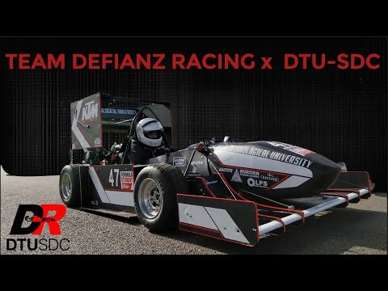

Know me better!!
At present I am an Undergrad student of Computer Science Engineering at Delhi Technological University.
I started learning web development out of curiosity, and now it’s something I genuinely enjoy doing.
Apart from this coding and "tech" thing I also enjoy playing badminton.
Music works as a mood booster for me on my bad or rough days as it really takes things off my mind and relaxes me.
My Skillls
Apart from technical expertise, I believe strong general skills make a developer truly effective.
I’m good at understanding problems, adapting quickly, and working efficiently in collaborative environments.
I enjoy solving problems and finding efficient ways to turn ideas into real solutions.
I approach challenges with positivity, persistence, and a willingness to learn from mistakes.
I’m always open to feedback and eager to grow with every project I take on.
In the present phase I am working on my communication skills as I personally feel that's something where I am lagging behind.
Coding Skills
Now let me tell you about my coding skills. Honestly when I started to code, I wasn't very comfortable in writing code but
with time things improved and this coding thing became my cup of tea.
Programming languages I know : C || C++|| Python Web Development skills : HTML || CSS || Basics of JavaScript
Apart from this I am also Exploring the core concepts of Machine Learning and Artificial Intelligence.
My aim is to beacome a Full Stack Web developer and a Machine Learning Expert by the end of the year 2026.
Societies and Tech teams
I have also joined many socities and tech teams in various departments so that they may do some value addition
in my skillset and overall personality development.
The Societies and Tech Teams I am a part of are :
- Team Defianz Racing - Autonomous department
- Business Bulls - Logistics Executive
- Round Table - Tech Guild and Operations department
- Rotaract Club - Logistics Executive
- Literature and Film Council DTU - Corporate Executive
Recent Projects
At present I am working on an autonomous Formula Student car which is one of my departmental tasks at Team Defianz Racing.
I have written a code to run a F1- tenth car autonomously using the Robot Operating System (ROS - noetic) on a F1 tenth simulator.
In this I have written all the codes and functions in python so that it is easy to understand and take less time to debug.
In this project I am facing a problem in tuning the car with respect various input variables and the error measurement by the LiDAR sensor,
but I hope I complete this task of mine very soon.
I will also be appearing in Formula Bharat in January 2026 where our team will be presenting this project and might become the first ever Formula Student Team to launch a fully autonomous car.

I have also made an AI - driven metro management system for Kochi metro as an Smart India Hackathon project.
This model what basically does is that it takes some input files like Metro trains available, routes to be taken, adveritsement exposure hours required, no. of hours travelled by the train etc.
Based on this information it tells the user/ system officials that which metro should go for repair, which should go route, which should stay back at the station.
It basically improves the system efficiency and reduces the required labour to do all this work manuallly.
Hence the name : KOMET is derived as "Kochi + Metro = KOMET".